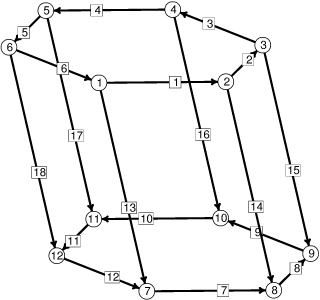

ZH 两个平行的水平平面之间形成桥接。
在每个平面上都有一个圆形焊盘，
焊料完全润湿这些焊盘，并且在焊盘区域外完全不润湿。
这本来只是一个具有固定体积的悬链面（catenoid）问题，
但焊盘是偏移的，并且需要确定焊料施加的对齐力。
该表面的定义方式与悬链面示例相同，
只是下边界环中有一个偏移变量 SHIFT，用于提供 y 方向的偏移。
这使得偏移量可以在运行时调整。
由于体（body）的顶面和底面不被包含，它们所占的常数体积通过上边界周围的内容积分（content integrals）来提供，
重力能量则通过能量积分（energy integrals）提供。
也可以使用体的 volconst 属性来设置体积，
但那样每次 ZH 改变时都需要重新设置该值。
本例中有趣的部分是力的计算。 可以逐步移动焊盘，在每个偏移位置最小化能量， 然后对能量进行数值微分来获得力。 或者，可以设置积分来直接计算力。 但最简单的方法是使用虚功原理（Principle of Virtual Work）： 移动焊盘，无需重新演化（re-evolve）就重新计算能量，并对体积变化进行修正。 重新演化不是必需的，因为当表面处于平衡状态时， 根据定义，任何尊重约束的扰动都不会在一阶上改变能量。 为了调整约束（如体积）的变化，拉格朗日乘子（Lagrange multipliers）（体积约束的压力） 会告诉我们在给定约束变化下能量的变化量：
DE = L*DC其中
DE 是能量变化，
L 是拉格朗日乘子的行向量，DC 是约束值变化的列向量。
因此，参数变化后的调整能量为：
E_adj = E_raw - L*DC其中
E_raw 是实际能量，DC 是约束值与目标值之差的向量。
数据文件中的命令 do_yforce 和 do_zforce
对上焊盘的力进行中心差分计算，并将表面恢复到原始位置。
注意，扰动是平滑进行的，即剪切从底部到顶部线性变化。
这不是绝对必要的，但它能提供更平滑的扰动，从而获得更高的精度。
|
 |
初始柱体骨架，顶点和边已编号。 |
// column.fe
// 计算斜置悬链面形状的液态焊料柱体所施加力的示例。
// 所有单位为 cgs
parameter RAD = 0.05 // 环半径
parameter ZH = 0.08 // 总高度
parameter SHIFT = 0.025 // 偏移量
#define SG 8 // 焊料比重
#define TENS 460 // 焊料表面张力
#define GR 980 // 重力加速度
gravity_constant GR
BOUNDARY 1 PARAMETERS 1
X1: RAD*cos(P1)
X2: RAD*sin(P1) + SHIFT
X3: ZH
CONTENT // 用于补偿缺失的顶面
c1: 0
c2: -ZH*x
c3: 0
ENERGY // 用于补偿顶面下的重力能量
e1: 0
e2: GR*ZH^2/2*x
e3: 0
BOUNDARY 2 PARAMETERS 1
X1: RAD*cos(P1)
X2: RAD*sin(P1)
X3: 0
vertices // 根据边界参数给出
1 0.00 boundary 1 fixed
2 pi/3 boundary 1 fixed
3 2*pi/3 boundary 1 fixed
4 pi boundary 1 fixed
5 4*pi/3 boundary 1 fixed
6 5*pi/3 boundary 1 fixed
7 0.00 boundary 2 fixed
8 pi/3 boundary 2 fixed
9 2*pi/3 boundary 2 fixed
10 pi boundary 2 fixed
11 4*pi/3 boundary 2 fixed
12 5*pi/3 boundary 2 fixed
edges
1 1 2 boundary 1 fixed
2 2 3 boundary 1 fixed
3 3 4 boundary 1 fixed
4 4 5 boundary 1 fixed
5 5 6 boundary 1 fixed
6 6 1 boundary 1 fixed
7 7 8 boundary 2 fixed
8 8 9 boundary 2 fixed
9 9 10 boundary 2 fixed
10 10 11 boundary 2 fixed
11 11 12 boundary 2 fixed
12 12 7 boundary 2 fixed
13 1 7
14 2 8
15 3 9
16 4 10
17 5 11
18 6 12
faces
1 1 14 -7 -13 density TENS
2 2 15 -8 -14 density TENS
3 3 16 -9 -15 density TENS
4 4 17 -10 -16 density TENS
5 5 18 -11 -17 density TENS
6 6 13 -12 -18 density TENS
bodies
1 -1 -2 -3 -4 -5 -6 volume 0.00045 density SG
read
// 通过中心差分计算上焊盘的水平力
dy := .0001
do_yforce := { oldshift := shift; shift := shift + dy;
set vertex y y+dy*z/zh; // 均匀剪切
recalc;
energy1 := total_energy -
body[1].pressure*(body[1].volume - body[1].target);
oldshift := shift; shift := shift - 2*dy;
set vertex y y-2*dy*z/zh; // 均匀剪切
recalc;
energy2 := total_energy -
body[1].pressure*(body[1].volume - body[1].target);
yforce := -(energy1-energy2)/2/dy;
printf "restoring force: %20.15f\n",yforce;
// 恢复所有内容
oldshift := shift; shift := shift + dy;
set vertex y y+dy*z/zh; // 均匀剪切
recalc;
}
// 通过中心差分计算上焊盘的垂直力
dz := .0001
do_zforce := { oldzh := zh; zh := zh + dz;
set vertex z z+dz*z/oldzh; recalc; // 均匀拉伸
energy1 := total_energy -
body[1].pressure*(body[1].volume - body[1].target);
oldzh := zh; zh := zh - 2*dz;
set vertex z z-2*dz*z/oldzh; recalc; // 均匀拉伸
energy2 := total_energy -
body[1].pressure*(body[1].volume - body[1].target);
zforce := -(energy1-energy2)/2/dz;
printf "vertical force: %20.15f\n",zforce;
// 恢复所有内容
oldzh := zh; zh := zh + dz;
set vertex z z+dz*z/oldzh; recalc; // 均匀拉伸
}